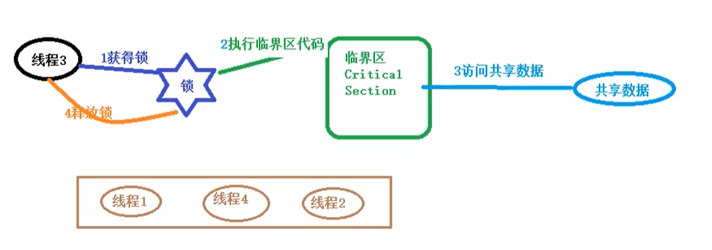

线程同步机制是一套用于协调线程之间的数据访问的机制，该机制可以保障线程安全。
Java平台提供的线程同步机制包括：锁，volatile关键字，final关键字，static关键字，以及相关的API，如Object.wait()/Object.notify()等。
1、锁概述：
线程安全问题的产生前提是多个线程并发访问共享数据。将多个线程对共享数据的并发访问转换为串行访问。（即一个共享数据一次只能被一个线程访问）
一个线程在访问共享数据之前必须先获得锁； 获得锁的线程被称为锁的持有线程；一个锁一次只能被一个线程持有。
锁的持有线程在获得锁之后和释放锁之前这段时间所执行的代码被称为临界区。
锁具有排他性，即一个锁一次只能被一个线程持有，这种锁称为排它锁或者互斥锁。

JVM把锁分为内部锁和显示锁两种，内部锁通过synchronized关键字实现；显示锁通过java.concurrent.locks.lock接口的实现类实现。
锁的作用：
锁可以实现对共享数据的安全访问，保障线程的原子性，可见性与有序性。
锁是通过互斥保障原子性，一个锁只能被一个线程持有，这就保证了临界区的代码一次只能被一个线程执行，使得临界区代码所执行的操作具有不可分割的特性，即具备了原子性。
可见性的保障是通过写线程冲刷处理器的缓存和读线程刷新处理器缓存这两个动作实现的。java平台中，锁的获得隐含着刷新处理器缓存的动作，锁的释放隐含着冲刷处理器缓存的动作。
锁能够保障有序性，写线程在临界区所执行的在读线程所执行的临界区看来像是完全按照源码顺序执行的。
注意：
使用锁保障线程的安全性，必须满足以下条件：
1、这些线程在访问共享数据时必须使用同一个锁；
2、即使是读取共享数据的线程也需要使用同步锁。
锁相关的概念
1、可重入性：
可重入性（Reentrancy）描述这样一个问题：一个线程持有该锁的时候能否再次（多次）申请该锁。
Lock是一种可重入锁。
void methodA(){
申请a锁;
methodB();
释放a锁
}
void methodB(){
申请a锁;
...
释放a锁;
}
如果一个线程持有一个锁的时候还能够继续成功申请该锁，称该锁是可重入的，否则称该锁是不可重入的。
2、锁的争用与调度
Java平台中内部锁属于非公平锁，显示 Lock锁即支持公平锁又支持非公平锁。
3、锁的粒度
一个锁可以保护的共享数据的数量大小称为锁的粒度。
锁保护的共享数据量大，称该锁的粒度粗，否则就称该锁的粒度细。
锁的粒度过粗会导致线程在申请锁时会进行不必要的等待，所得粒度过细会增加锁调度的开销。
2、内部锁：synchronized关键字
Java中的每个对象都有一个与之关联的内部锁（Intrinsic Lock），这种锁也称为监视器（Monitor），这种内部锁是一种排他锁，可以保障原子性，可见性与有序性。
内部锁是通过synchronized关键字实现的，synchronized关键字修饰代码块，修饰方法。
修饰代码块的语法：
synchronized(对象锁){
同步代码块，可以在同步代码块中访问共享数据
}
修饰实例方法就称为同步实例方法
修饰静态方法就称为同步静态方法
public void mm(){
synchronized(this){//经常使用this当前对象作为锁对象
for(int i=1;i<=100;i++){
}
}
}
1、使用this（当前对象）作为锁对象（synchronized同步代码块）
注意：实现同步必须使用同一个锁对象。

2、使用常量作为锁对象
不管是实例方法还是静态方法，只要使用同一个锁对象就可以实现同步。
3、synchroized同步实例方法：把整个方法体作为同步代码块，默认的锁对象是this对象.
语法：
public synchronized void mm(){
}
4、synchronized同步静态方法：把整个方法体作为同步代码块，默认的锁对象是当前类的运行时类对象（运行时类对象：类名.class）
将运行时类对象作为锁对象，也称为类锁。
同步静态方法，和同步实例方法，不管是对象调用静态方法还是类调用静态方法，都会实现同步。
与同步方法相比同步代码块执行效率更高。（主要就是同步代码块代码块前的运行时间）
同步方法与同步代码块如何选择？
同步方法锁的粒度粗，执行效率低；同步代码块，锁的粒度细，执行效率高。
脏读：
出现读取属性值出现了一些意外，读取的是中间值，不是修改后的值。
出现脏读的原因：对共享数据的修改 与对共享数据的读取不同步。
解决方法：不仅对修改数据的代码块进行同步，还要对读取数据的代码块同步。
同步过程中线程出现异常，会自动释放锁对象。其他线程获得锁对象，继续执行。
死锁：
在多线程程序中，同步可能需要使用多个锁，如果获得锁的顺序不一致，可能会导致死锁。
如何避免死锁？
当需要获得读个锁时，所有线程获得锁的顺序保持一致即可。
3、轻量级同步机制：volative关键字
3.1、volative的作用
volatile关键字的作用：使变量在多个线程之间可见。强制线程从公共内存中读取变量的值，而不是从工作内存中读取。
3.2、volatile与synchronized比较
1>volatile关键字是线程同步的轻量级实现，所以volatile的性能肯定比synchronized要好；volatile只能修饰变量，而synchronized可以修饰方法，代码块。随着JDK新版本的发布，synchronized的执行效率也有较大提升，在开发中使用synchronized的比率还是很大的。
2>多线程访问volatile变量不会发生阻塞，而synchronized可能会发生阻塞。
3>volatile能保证数据的可见性，但是它不能保证原子性。synchronized可以保证原子性，也可以保证可见性。
4>关键字volatile解决的是变量在多个线程之间的可见性；synchronized关键字解决的是多个线程之间访问公共资源的同步性。
3.3、volative非原子特性
volative关键字仅仅表示的所有线程从主内存读取count变量的值，它不具备原子性：
class{
main(){
for(int i=0;i<100;i++){
new MyThread().static();
}
}
myThread(){
public volatile static int count;
public static void addCount(){
for(int i=0;i<1000;i++){
count++;
}
sout(count);
}
}
}
这段代码不是线程同步的，想要实现线程同步，需要使用synchronized进行同步，使用synchronized关键字之后，也就不需要valatile关键字了。
3.4、常用的原子类进行自增 自减操作
i++操作不是原子操作，除了使用synchronized进行同步，也可以使用Atomiclnteger/AtomicLong原子类进行实现（原子类实现同步的原理：CAS）
1、使用AtomicInteger对象
class{
main(){
for(int i=0;i<100;i++){
new MyThread().static();
}
}
myThread(){
public volatile static AtomicInteger count=newAtomicInteger();
public static void addCount(){
for(int i=0;i<1000;i++){
count.getAndIncrement();
}
sout(count);
}
}
}
3.5 CAS
CAS（Compare And Swap）是由硬件实现的。
CAS可以将read-modify-write这类的操作转换为原子操作
i++操作包括三个子操作：
1、从内存读取i变量的值；
2、对i的值加1；
3、在把加1之后的值保存到主内存
CAS原理：在把数据更新到主内存时，再次读取主内存变量的值，如果现在变量的值与期望的值（操作起始时读取的值）一样就更新。


使用CAS实现一个线程安全的计数器：
class Count {
volatile private long value;
public long getValue(){
return value;
}
//定义一个comare and swap
private boolean compareAndSwap(long expectedValue,long newValue){
//如果当前的value值与期望的expectedValue值一样，就把当前的Value字段替换为newValue
synchronized(this){
if(value==expectedValue){
value=newValue;
return true;
}else{
false;
}
}
}
//定义自增的方法
public int incrementAndGet(){
long oldValue;
long newValue;
do{
longValue=value;
newValue=oldValue;
}while(!compareAndSwap(oldValue,newValue))
retrun newValue;
}
}
CAS实现原子操作背后有一个假设：共享变量的当前值与当前线程提供的期望值相同，就认为这个变量没有被其他线程修改过，实际上这种假设不一定总是成立，
如：存在共享变量 count=0;
A线程对count值修改为10；
B线程对count值修改为20；
C线程对count值修改为0；
当前线程看到count变量的值现在是0，现在是否认为count变量的值没有被其他线程的值更新？这种结果是否能够接受？
这就是CAS中的ABA问题，即共享变量经历了A->B->A的更新
是否能够接受ABA问题跟实现的算法有关。
如果想要规避ABA问题，可以为共享变量引入一个修订号（时间戳），每次修改共享变量时，相应的修订号就会增加1。
引入修订号（时间戳）之后，共享变量的更新过程
【A，0】->【B，1】->【A，2】，每次对共享变量的修改都会导致共享变量修订号的增加，通过修订号依然可以准确判断变量是否被其他线程修改过。
AtomicStampedRefere类就是基于这种思想产生的。
3、6 原子变量类：
原子变量类基于CAS实现的，当对共享变量read-modify-write更新操作时，通过原子变量类可以保障操作的原子性与可见性，对变量的read-modify-write更新操作是指，当前操作不是一个简单的赋值，而是变量的新值依赖变量的旧值，如自增操作i++。由于volatile只能保证可见性，无法保障原子性，原子变量类内部就是借助一个Volatile变量，并且保障了该变量的read-modify-write操作的原子性，有时把原子变量类看做是增强的volatile变量，原子变量类有12个。
分组 | 原子变量类 |
基础数据型 | AtomicInteger,AtomicLong,AtomicBoolean |
数组型 | AtomicIntegerArray,AtomicLongArray,AtomicReferenceArray |
字段更新器 | AtomicIntegerFieldUpdate， AtomicLongFieldUpdate， AtomicReferenceFieldUpdater |
引用型 | AtomicReference，AtomicStamped Reference，AtomicMarkableReference |
3.6.1 AtomicLong
使用原子变量类定义一个计数器，该计数器在整个程序中都能使用，并且所有的地方都使用这一个计数器，这个计数器可以设置为单例。
public class Indicator{
//构造方法私有化
private Indicator(){}
//定义一个私有的本类的静态对象
private static final Indicator INSTANCE=new Indicator();
//提供一个公共静态方法返回改类的唯一实例
public static Indicator getInstance(){
return INSTANCE;
}
//使用原子变量类保存请求总数，成功数，失败数
private final AtomicLong requestCount=new AtomicLong(0);//记录请求总数
private final AtomicLong successCount=new AtomicLong(0);//处理成功总数
private final AtomicLong fialureCount=new AtomicLong(0);//处理失败总数
//有新的请求
public void new RequestReceive(){
requestCount.incrementAndGet();
}
//处理成功
public void requestProcessSuccess(){
successCount.incrementAndGet();
}
//处理失败
public void requestProcessFailure(){
fialureCount.incrementAndGet();
}
//查看总数，成功数，失败数
public long getRequestCount(){
return requestCount.get();
}
public long getSuccessCount(){
return successCount.get();
}
public long getFialureCount(){
return fialureCount.get();
}
}
在实际应用中可以在ServletFilter中调用Indicator计数器的相关方法。
3.6.2 AtomicIntegerArray 原子更新数组
psvm{
//创建一个指定长度的原子数组 AtomicIntegerArray atomicIntegerArray=new AtomicIntegerArray(4);
sout(atomicIntegerArray);//[0,0,0,0]
//返回指定位置的元素
atomicIntegerArray.get(0);
//设置指定位置的元素
atomicIntegerArray.set(0,10);
//在设置元素的新值，同时返回数组元素的旧值
atomicIntegerArray.getAndSet(1,11);
//修改数组元素的值，把数组元素加上某个值,先加在返回
atomicIntegerArray.addAndGet(0,22);
//修改指定元素的值，把数组元素加上某个值，先返回在加
atomicIntegerArray.getAndAdd(1,33);
----
CAS操作
//如果0号索引元素是32的话，将它设置为222，替换成功返回true，替换不成功返回false
atomicIntegerArray.compareAndSet(0,32,222);
自增/自减
atomicIntegerArray.incrementAndGet(0);
atomicIntegerArray.getAndIncrement(1);
atomicIntegerArray.getAndDecrement(1);
atomicIntegerArray.decrementAndIncrement(1);
}
在多线程中使用原子数组
class Test{
static AtomicIntegerArray atomicIntegerArray =new
AtomicIntegerArray(10);
psvm(){
//定义线程数组
Thread[] thread=new Tread[10];
//给线程数组元素赋值
for(int i=0;i<thread.length;i++){
thread[i]=new AddThread();
}
//开启子线程
for(Thread thread:threads){
thread.static();
}
//在主线程中查看自增完以后，原子数组中的各个元素的值，在主线程中需要在所有子线程都执行完之后在查看
//把所有的 子线程合并到当前主线程当中
for(Thread thread:threads){
thread.join();
}
System.out.println(atomicIntegerArray);
}
static class AddThread extends Thread{
public void run(){
//把每个原子数组自增1000次，
for(int j=0;j<1000;j++){
for(int i=0;i<atomicIntegerArray.length();i++){
atomicIntegerArray.getAndIncrement(i%atomicIntegerArray.length());
}
}
}
}
}
3.6.3AtomicLintegerFiledUpdater
AtomicLintegerFiledUpdater可以对原子整数字段进行更新，要求：
1、字符必须使用volatile修饰，使线程之间可见
2、只能是实例变量，不能是静态变量，也不能使用final修饰。
public class SubThread extends Thread{
priavte User user;
priavte AtomicLintegerFiledUpdater<User>updater= AtomicLintegerFiledUpdater.newUpdater(User.class,"age");
public SubYhread(User user){
this.user=user;
}
public void run(){
//在子线程中对user对象的age字段自增10次
for(int i=0;i<10;i++){
System.out.println(update.getAndIncrement(user));
}
}
}
3.6.4 AtomicReference
可以原子读写一个对象
public class Test01{
static AtomicReference<String> atomicReference=new AtomicReference("abc");
public static void main(){
//创建100个线程修改字符串
for(int i=0;i<100;i++){
new Thread(new Runnable(){
public void run(){
if(atomicReference.compareAndSet("abc","def")){
System.out.print(Thread.currentThread().getName()+"把字符串abc更改为def");
}
}
}).start();
}
}
}
AtomicReference可能会出现CAS中的ABA问题。
AtomicStamped Reference，
AtomicMarkableReference，
都可以解决ABA问题。
AtomicStamped Reference原子类中有一个整数标记值 stamp，每次执行CAS操作时，需要对比它的版本，即比较stamp的值。
public class Test03{
priavte static AtomicStamedReference<String>stampedReference=new AtomicStampedReference<>("abc",0);
public static void main(String[] args){
public void run(){
stampedReference.compareAndSet("abc","def",stampedReference.getStamp(),stampedReference.getStamp()+1);//版本号+1
}
}
}
4、线程之间通信
4、1 等待通知机制
4.1.1、什么是等待通知机制？
在单线程编程中，要执行的操作需要满足一定的条件才能执行，可以把这个操作放在if语句块中。
在多线程编程中，可能A线程的条件没有满足只是暂时的，稍后其他的线程B可能会更新条件使得A线程的条件得到满足，可以将A线程暂停，直到它的条件得到满足后再将A线程唤醒。
伪代码：
atomics {//原子操作
while(条件不成立){
等待
}
当前线程被唤醒条件满足后，继续执行下面的操作
}
4.1.2、等待/通知机制的实现
object类中的wait方法可以使执行当前代码的线程等待，暂停执行，直到接到通知或被中断为止。
注意：
1、wait（）方法只能在同步代码块中由锁对象调用
2、调用wait（）方法，当前线程会释放锁
伪代码：
synchronized(锁对象){
while(条件不成立){
//通过锁对象调用wait（）方法暂停线程
锁对象.wait();
}
//线程的条件满足了继续向下执行
}
object类的notify（）可以唤醒线程，该方法也必须在同步代码块中由锁对象调用，没有使用锁对象调用wait（）/notify（）会抛出IIegalMonitorStateExeption异常，如果有多个等待的线程，notify（）方法只能唤醒其中的一个。在同步代码块中调用notify（）方法并不会立即释放锁对象，需要等当前同步代码块执行完后才会释放锁对象，一般将notify（）方法放在同步代码块的最后，它的伪代码如下：
synchronized（锁对象）{
//修改保护条件的代码
//唤醒其他线程
锁对象.notify();
}
wait（）方法的基本使用
public class Test01{
/*
wait()和notify()必须放在同步代码块中，否则会报
java.lang.IllegalMonitorStateException异常
*/
public static void main(String[] args){
try{
String test="123";
test.wait();//java.lang.IllegalMonitorStateException异常
}catch(InterruptedException e){
e.printStackTrace();
}
}
}
public class Test02{
public static void main(String[] args){
try{
String text="123";
String another="456";
System.out.println("同步前的代码");
synchronized(text){
System.out.println("同步代码块开始");
text.wait();//调用wait方法后，当前线程就会等待，释放锁对象，当前对象需要被唤醒，如果没有唤醒，就会一直等待
//不是锁对象调用会产生java.lang.IllegalMonitorStateException异常
//another.wait();
System.out.println("wait后面的代码");
}
System.out.println("同步代码跨后面的代码");
}catch(InterruptedException e){
e.printStackTrace();
}
System.out.println("main后面的其他代码");
}
}
使用notify唤醒等待的线程
public class Test03{
public static void main(String[] args){
String lock="123";//定义一个字符串作为锁对象
Thread t1=new Thread(new Runnable(){
public void run(){
synchronized(lock){
System.out.println("线程1开始等待："+System.currentTimeMillis());
lock.wait();//线程等待，会释放锁对象，当前线程转入等待状态；
System.out.println("线程1结束等待"+System.currentTimeMillis());
}
}
});
//定义第二个线程，在第二个线程中唤醒第一个线程
Thread t2=new Thread(new Runnable(){
public void run(){
//notify()方法也需要在同步代码块中，由锁对象调用
synchronized(lock){
System.out.println("线程2开始唤醒"+System.currentTimeMillis());
}
}
})
t1.start();//开启t1线程，t1线程等待
Thread.sleep(3000);// main线程睡眠3秒，确保t1入睡
t2.static();//t1线程开启3秒后，再开启t2线程唤醒t1线程。
}
}
notify（）方法不会立即释放锁对象
public class Test04{
public static void main(String[] args){
//定义一个List集合存储String数据
List<String>list=new ArrayList<>();
//定义第一个线程，当list集合中的元素不等于5时线程等待
Thread t1=new Thread(new Runnable(){
public void run(){
synchronized(list){
if(list.size()!=5){
System.out.println("线程1开始等待"+System.currentTimeMillis());
list.wait();
System.out.println("线程1被唤醒"+System.currentTimeMillis());
}
}
}
})
//定义第二个线程，向list集合添加元素
Thread t2=new Thread(new Runnable(){
public void ren(){
for(int i=0;i<10;i++){
list.add("data--"+i);
System.out.println("线程2添加了第"+(i+1)+"个数据");
//判断元素的数量是否满足线程1
if(list.size()==5){
list.notify();//notify不会立即释放锁对象，需要等到当前同步代码块都执行完，才会释放锁对象。
System.out.println("线程2已经发现唤醒 通知");
}
Thread.sleep(1000);
}
}
})
t1.start();
//为了确保t2在t1之后开启
Thread.sleep(500);
t2.start();
}
}
4.1.3、interrupt（）方法会中断wait()
当线程处于wait（）等待状态时，调用线程对象的interrupt（）方法会中断线程的等待状态，会产生InterruptedException异常
public class Test05{
public static void main(String[] args){
SubThread t=new SubThread();
t.start();
Thread.sleep(2000);//主线程睡眠两秒，确保子线程处于wait状态
t.intreeupt();
}
private static final Object LOCK=new Object();//定义常量作为锁对象
static class SubThread extends Thread{
public void run(){
synchronized(LOCK){
System.out.println(begin wait);
LOCK.wait();
System.out.println(end wait);
}
}
}
}
释放锁对象：
1、代码块执行完毕；
2、执行wait()方法；
3、线程意外终止。
4.1.4 notify()与notifyAll()的作用都是唤醒线程。
区别在于：
1、notify（）一次只能唤醒一个线程，如果有多个等待的线程，只能随机唤醒其中的一个；notifyAll一次可以唤醒所有线程
（调用一次notify来唤醒其中的一个线程，其他等待的线程依然处于等待状态，对于等待状态的线程来说，错过了通知信号，这种现象也称为信号丢失）
4.1.5 wait（long）的使用
wait（long）带有long类型参数的wait()等待，如果在参数指定的时间内没有被唤醒，超时后会自动唤醒，long数值为指定的时长。
4.1.6通知过早
线程wait（）等待后，可以调用notify（）唤醒线程，如果notify唤醒过早，在等待之前就调用的notify（）可能会打乱程序正常的执行逻辑。
调用start（）就是告诉线程调度器，当前线程准备就绪，线程调度器在什么时候开启这个线程不确定，即调用start方法的顺序，并不一定就是线程实际开启的顺序。
定义一个静态变量作为第一个线程运行的线程 标志
static boolean isFirst=true;
4.1.7 wait等待的条件发生了变化
在使用wait/notify模式时，注意wait条件发生了变化，也可能造成逻辑的混乱。


出现异常的原因：向集合中添加一一个元素，取出了两次。
如何解决？
当等待的线程被唤醒后，再判断一次集合中是否有数据可取，需要把if(list==0)改为while(list==0),让取数据的线程在重新获取执行权后再重新判断一次。
4.1.8 生产者消费者模式
在java程序设计中，负责生产数据的模块是生产者，负责使用数据的模块是消费者。生产者-消费者解决数据平衡问题，即先有数据然后才能使用，没有数据时，消费者需要等待。
1、生产者-消费者 操作数据 （数据量为1）
一个生产者一个消费者，略。
多个生产者多个消费者。
注意：1、每个消费者被唤醒时，要先判断集合里当前有没有值。每个生产者被唤醒时，先判断集合里的值是不是充足。
2、使用this作为锁，有这么一种情况，生产者1生产，唤醒了生产者2，生产者2等待，生产者2唤醒生产者3，生产者3等待，。。。。所有生产者全部等待，唤醒消费者1，消费者1消费，唤醒消费者2，等待，消费者2唤醒消费者3，消费者3等待，所有的消费者全部等待。所有线程全部等待，进入假死状态。
出现假死的原因：生产者线程不能确定它唤醒的是消费者线程，消费者线程同理。
解决方案：可以将notify()改为notifyAll();
2、操作栈
使生产者把数据存储到List集合中，消费者从List集合取数据，使用List集合模拟栈。
4.2、通过管道实现线程间的通信
在java.io包中的PipeStream管道流用于在线程之间传送数据，一个线程发送数据到输出管道，另外一个线程从输入管道中读取数据。相关的类包括：PipedInputStream和PipedOutputStream， PipedReader和PipedWriter。
public class {
public static void main(String[] args){
//定义管道字节流
PipedInputStream inputStream=new PipedInputStream();
PipedOutputStream outputStream=new PipedOutputStream();
inputStream.connect(outputStream);
//定义线程向管道流中写入数据
new Thread(new Runnable(){
public void run(){
writeData(outputStream);
}
}).start();
new Thread(new Runnable(){
public void run(){
readData(inputStream);
}
}).start();
}
public static void writeData(PipedOutputStream out){
try{
//分别把0-100写入管道
for(int i=0;i<100;i++){
String data=""+i;
out.write(data.getBytes());
}
out.close();//关闭管道流
}catch(IOException e){
e.printStackTrace();
}
}
public static void readData(PipedInputStream in){
byte[] bytes=new byte[1024];
try{
//从管道输入字节流中读取字节保存到字节数组中
int len=in.read(bytes);//返回读到的字节数，没有读到任何数据返回-1
while(len!=-1){
//把byte数组中从0开始的len个字节转换为字符串打印
System.out.println(new String(bytes,o,len));
len=in.read(bytes);//继续从管道中读取数据
}
in.close();
}catch(IOException e){
e.printStackTrace();
}
}
}
4、2 join()
5、ThreadLocal的使用（线程特有对象）
除了控制资源的访问，还可以通过增加资源来保证线程安全，ThreadLocal主要解决为每个线程绑定自己的值。
threadLocal案例：
在多线程环境下，把字符串转换为日期对象，多个线程使用同一个对象可能会产生线程安全问题
为每个线程指定自己的SimpleDateFormat对象 ，使用ThreadLocal
public class{
//定义一个SimpleDateFormat对象，该对象可以把字符串转化为日期 private static SimpleDateFormat sdf=new SimpDateFormat("yyyy年MM月dd日 HH:mm:ss");
static ThreadLocal<SimpleDateFormat> threadLoacl=new ThreadLocal<>();
//定义Runnable接口的实现类
static class ParseDate implement Runnable{
private int i=0;
public ParseDate(int i){
this.i=i;
}
public void run(){
try{
String text="2068年11月22日 08:28"+i%60;构建日期字符串
//Date date=sdf.parse(text);
//System.out.print(i+"--"+date);
先判断当前线程是否有SimpledateFormate对象，如果当前线程没有SimpleDateFormat对象就创建一个，如果有就直接使用
if(threadLocal.get()==null){
threadLocal.set(new SimpDateFormat("yyyy年MM月dd日 HH:mm:ss"););
}
Date date=threadLocal.get().pase(text);
}catch(ParseException e){
e.printStackTrace();
}
}
}
}
threadLocal初始值：
public class{
static ThreadLocal threadlocal=new ThreadLocal();
//定义线程类
static class SubThread extends Thread{
public void run(){
for(int i=0;i<10;i++){
//第一次调用threadLocal的get方法会返回null
System.out.print("---"+Thread.currentThread().getName()+"value"+threadLocal.get());
//如果没有初始值就设置当前日期
if(threadLocal.get()==null){
threadLocal.set(new Date());
}
}
}
}
}
设置TheadLocal的初始值
public class{
//1、定义一个ThreadLocal的子类
static class SubThreadLocal extends ThreadLocal<Date>{
//2、重写initialValue 方法，设置初始值
有初始值后，第一次调用ThreadLocal就不会返回null了。
protected Date initialValue(){
return new Date()//把当前日期设置为初始值;
}
}
static ThreadLocal threadlocal=new ThreadLocal();
//定义线程类
static class SubThread extends Thread{
public void run(){
for(int i=0;i<10;i++){
//第一次调用threadLocal的get方法会返回null
System.out.print("---"+Thread.currentThread().getName()+"value"+threadLocal.get());
//如果没有初始值就设置当前日期
if(threadLocal.get()==null){
threadLocal.set(new Date());
}
}
}
}
}
6、Lock显示锁
在JDK5中增加了Local锁接口，有ReentrantLock实现类，ReentrantLocal锁称为可重入锁，它的功能比synchronized多。
1、锁的可重入性
锁的可重入是指，当一个线程获得一个对象锁之后，再次请求该对象锁是可以获得该对象的锁的。假设锁不可重入，可能会造成死锁（如synchronized实例方法之间的调用）。 Lock是一种可重入锁。
2、ReentranLock 的基本使用
2.1、调用lock（）获得锁，调用unlock（）释放锁；
public class{
//定义显示锁
static Lock lock=new ReentrantLocal();
//定义方法
public static void sm(){
//先获得锁
lock.lock();
//for循环就是同步代码块
for(int i=0;i<100;i++){
System.out.print(Thread.currentThread().getName()+"--"+i);
//释放锁
Lock.unlock();
}
}
}
2.2、使用Lock锁同步不同方法中的同步代码块
public class{
static Lock lock=new ReentrantLock();//定义一个锁对象
public static void sm(){
//经常在try代码块中获得Lock锁，经常在finally字句中释放锁
try{
lock.lock();//获得锁
System.out.println(Thread.cuuentThread().getName()+"method1"+System.currentTimeMillis());
}catch(){
}finally{
lock.unlock();//释放锁
}
}
public static void sm2(){
//经常在try代码块中获得Lock锁，经常在finally字句中释放锁
try{
lock.lock();//获得锁
System.out.println(Thread.cuuentThread().getName()+"method1"+System.currentTimeMillis());
}catch(){
}finally{
lock.unlock();//释放锁
}
}
sm方法和sm2方法可以实现同步
}
2.3、ReentranLock锁的可重入性
注意：获得几次锁，就得释放几次锁。
2.4、lockInterruptibly()方法
lockInterruptibly()方法的作用：如果当前线程未被中断则获得锁，如果当前线程被中断则出现异常。
lock.lock();//获得锁定之后，即使调用线程的interrupt()方法，也没有真正的中断线程
lock.lockInterruptibly();//如果 线程被中断了，不会获得锁，会产生异常。
对于synchronized内部锁来说，如果一个线程在等待锁，只有两个结果：要么该线程获得锁继续执行，要么就保持等待。
对于ReentrantLock可重入锁来说，提供另外一种可能，在等待锁的过程中，程序可以根据需要取消对锁的请求。
2.4.1、lockInterruptibly()方法为死锁问题的处理提供了一种解决方案。（外部中断）
假设程序检测出线程之间可能出现死锁，或者已经出现死锁
使用lockInterruptibly()方法获得锁：在监测线程中如果发现死锁
中断任何一个线程，解决死锁
if(thread2.isAlive()){
thread.interrupt();
}
2.5、tryLock(long time,TimeUnit unit)方法（限时等待）
tyrLock(long time,TimeUnit unit)：获得锁返回true
作用：在跟定等待时长内锁没有被另外的线程持有，并且当前线程也没有被中断，则获得该锁。通过该方法可以实现锁对象的限时等待。
2.6、tryLock()方法
仅在调用时锁定未被其他线程持有的锁，如果调用方法时，锁对象被其他线程持有则放弃。调用方法尝试获得锁，如果该锁没有被其他线程占用则返回true，表示锁定成功；如果锁被其他线程占用，则返回false，不等待。
通过trylock()方法可以避免死锁。
运行后，使用tryLock()尝试获得锁，不会傻傻的等待，通过循环不断的再次尝试，如果等待的时间足够长，线程总是会获得想要的资源。
2.7、newCondition()方法
关键字synchronized与wait（）/notify（）这两个方法一起使用可以实现等待/通知模式。 Lock锁的newContition（）方法返回Condition对象，Condition类也可以实现等待/通知模式。
使用notify 通知时，JVM会随机唤醒某个等待的线程，使用Condition类可以实现选择性通知。
Condition类比较常用的两个方法：
await（）会使当前线程等待，同时会释放锁，当其他线程调用signal（）时，线程会重新获得锁并继续执行。
signal（）用于唤醒一个等待的线程。
注意：在调用Condition的await（）/signal（）方法前，也需要线程持有相关的Lock锁，调用await（）会释放这个锁，在singal（）调用后会从当前Condition对象的等待队列中，唤醒一个线程，唤醒的线程会尝试获得锁，一旦获得锁成功就继续执行。
Condition实现两个线程交替打印
signalAll（）唤醒所有等待线程。（解决假死）
2.8 公平锁与非公平锁
在大多数情况下，锁的申请都是非公平的，如果线程1与线程2都在请求锁A，当锁A可用时，系统只是会从阻塞队列中随机的选择一个线程，不能保证其公平性。
公平的锁会按照时间先后顺序，保证先到先得，公平锁的这一特点不会让线程饥饿。
synchronized内部锁就是非公平的，ReentrantLock重入锁提供了一个构造方法：ReentrantLock(boolean fair)，当在创建锁对象时实参传递true可以把该锁设置为公平锁。
运行程序：
1、如果是非公平锁，系统倾向于让一个线程再次获得已经持有的锁；这种分配策略是高效的，但是是非公平的。
2、如果是公平锁，多个线程不会发生同一个线程连续多次获得锁的可能；保证了公平性。公平锁的实现需要系统维护一个有序的队列，公平锁的实现成本相对较高，性能也较低。因此默认情况下锁是非公平的。
2.9、几个常用的方法
1、int getHoldCount() 返回当前线程调用lock()方法的次数。
2、int getQueueLength() 返回正在等待获得锁的线程预估数。
3、int getWaitQueueLength(Condition condition) 返回与Condition条件相关的等待的线程预估数
4、boolean hasQueuedThread(Thread thread ) 查询参数指定的线程是否在等待获得锁
5、boolean hasQueuedThreads() 查询是否还有线程在等待获得该锁
6、boolean hasWaiters(Condition condition)查询是否有线程正在等待指定的Condition条件
7、boolean isFair 判断是否为公平锁
8、boolean isHeldByCurrentThread() 判断当前线程是否持有该锁
9、boolean isLocked() 查询当前锁是否被线程持有
3、ReentrantReadWriteLock 读写锁
synchronized内部锁与ReentrantLock锁都是独占锁（排他锁），同一时间只允许一个线程执行同步代码块，可以保证线程的安全性，但是执行效率低。
ReentrantReadWriterLock读写锁是一种改进的排它锁，也可以称作共享排他锁，允许多个线程同时读取共享数据，但是一次只允许一个线程对共享数据进行更新。
读写锁通过读锁与写锁来完成读写操作，线程在读取共享数据前必须先持有读锁，该读锁可以同时被多个线程持有，即它是共享的。写锁是排他的，线程在更新共享数据前必须先持有写锁。一个线程持有写锁时其他线程无法获得相应的锁（包括 读锁和写锁）。
读锁只是在读线程之间共享，任何一个线程持有读锁时，其他线程都无法获得写锁。
即，读写锁允许读读共享，读写互斥，写写互斥。
在java.util.concurrent.locks包中定义了ReadWriteLock接口，该接口中定义了readLock（）返回读锁，定义writeLock（）方法返回写锁，该接口的实现类是ReentrantReadWriteLock。
注意：
readLock（）与writeLock方法返回的锁对象是同一个锁的两个不同的角色，不是分别获得两个不同的锁。ReadWriteLock接口的实例可以充当两个角色。
读写锁的基本使用方法：
1、定义读写锁
ReadWriteLock rwLock=new ReentrantReadWriteLock();
2、获得读锁
Lcok readLock=rwLock.readLock();
3、获得写锁
Lock writeLock=rwLock.writeLock();
4、读数据
readLock.lock();//申请读锁
try{
读取共享数据；
}finally{
readLock.unlock();总是在finally字句中释放锁
}
5、写数据
writeLock.lock();// 申请写锁
try{
更新共享数据；
}finally{
writeLock.unlock();总是在finally字句中释放锁
}
3、1 读读共享
3、2 写写互斥
3、3 读写互斥
6、线程管理
6.1、线程组
类似于在计算机中使用文件夹管理文件，也可以使用线程组来管理线程，在线程组中定义一组相似（相关）的线程，在线程组中可也以定义子线程组。
Thread类有几个构造方法允许在创建线程时指定线程组，如果在创建线程时没有指定线程组则该线程就属于父线程所在的线程组。JVM在创建main线程时会为它指定一个线程组，因此每个java线程都有一个线程组与之关联，可以调用线程的getThreadGroup（）方法返回线程组。
线程组开始是处于安全的考虑设计用来区分不同的Applet，然而ThreadGroup并未实现这一目标，在新开发的系统中，已经不常用线程组，现在一般会将一组相关的线程存入一个数组或一个集合中，如果仅仅是用来区分线程时，可以使用线程名称来 区分。因此，在多数情况下可以忽略线程组。
6.1.1、创建线程组
java.lang.ThreadGroup
构造方法
ThreadGroup t=new ThreadGroup("线程组的名称");
ThreadGroup t1=new ThreadGroup(父线程组，“线程租的名称”)
//在创建线程组时，如果不指定所属线程组，则自动归属到当前所属的线程组中
//创建线程时，可以指定线程的所属线程组
Thread t1=new Thread(group,r,"t1");

6.1.2、线程组的基本操作
activeCount() 返回当前线程组及子线程组中活动线程的数量（近似值）
activeGroupCount() 返回当前线程组及子线程组中活动线程组的数量（近似值）
int enumerate(Thread[] list) 将当前线程组和子线程组中的活动线程复制到 参数数组中
enumerate(ThreadGroup[] list) 将当前线程组中的活动线程组和子线程组复制到参数数组中
getMaxPriority() 返回线程组的最大优先级，默认是10
getName() 返回线程组的名称
getParent() 返回父线程组
interrupt() 中断线程组中的所有线程
isDaemon()判断当前线程组是否为守护线程组
list() 将当前线程组中的活动线程打印出来
parentOf(ThreadGroup g) 判断当前线程是否为参数线程组的父线程组
setDaemon(boolean daemon) 设置线程组为守护线程组
6.1.3 复制线程组中的线程及子线程组
int enumerate(Thread[] list) 将当前线程组和子线程组中的活动线程复制到 参数数组中
int enumerate(Thread[] list,boolean recursive) 将当前线程组中的活动线程复制到 参数数组中，如果第二个参数设置为false，则只复制当前线程组中的所有的线程，不复制子线程组中的线程。
enumerate(ThreadGroup[] list) 将当前线程组和子线程组中的活动线程组复制到参数数组中
enumerate(ThreadGroup[] list，boolean recursive) 将当前线程组和子线程组中的活动线程组复制到参数数组中，如果第二个参数为false，则只复制当前线程组的子线程组
6.1.4 线程组的批量中断
线程组的interrupt（）可以给该线程组中所有的活动线程添加中断标志。
6.1.5 设置守护线程组
守护线程是为其他线程提供服务的，当JVM只有守护线程时，守护线程会自动销毁，JVM会自动退出。
调用线程组的 setDaemon(true) 可以把线程组设置为守护线程组，当守护线程组中没有任何活动线程时，守护线程组会自动销毁。
注意：线程组的守护属性，不影响线程组中线程的守护属性，或者说守护线程组中的线程可以是非守护线程。
6.2 、捕获线程的执行异常
在线程的run方法中，如果有受检异常必须捕获处理，如果想要获得run()方法中出现的运行时异常信息，可以通过回调 UncaughExceptionHandler接口获得哪个线程出现了运行时异常，在Thread类中有关处理运行时异常的方法有：
getDefaultUncaughtExceptionHandler()获得全局的（默认的）UncaughtExceptionHandler
getUncaughtExceptionHandler（）获得当前线程的UncaughtExceptionHandler
setDefaultUncaughtExceptionHandler(UncaughtExceptionHandler u)设置全局的（默认的）UncaughtExceptionHandler
setUncaughtExceptionHandler（UncaughtExceptionHandler u）设置当前线程的UncaughtExceptionHandler
当线程运行过程出现异常，JVM会调用Thread类的dispathUncaughtException(Throwable e)方法，该方法会调用
getUncaughtExceptionHandler().uncaughtException(this,e);如果想要出现线程中出现异常的信息，就需要设置线程的
UncaughtExceptionHandler
psvm(){
//设置线程全局的回调接口
Thread.setDefaultUncaughtExceptionHandler(new Thread.UncaughtExceptionHandler(){
public void uncaughtException(Thread t,Throwable e){
//t参数接收发生异常的线程，e就是该线程的异常
System.out.println(t.getName()+"线程产生了异常："+e.getMessage());
}
});
}
实际开发中，这种异常处理的方式还是比较常见的，尤其是异常执行的方法，如果线程产生了异常，JVM会调用dispatchUncaughtExcaption()方法，在该方法中调用了getUncaughtExceptionHandler().uncaughtException(this,e);如果在当前线程设置了UncaughtExceptionHandler回调接口就直接调用它自己的uncaughtException()方法，如果没有设置则调用当前线程所在线程组UncaughtExceptionHandler回调接口的uncaughtException方法，如果线程组也没有设置，则直接把异常的栈信息定向到System.err中。
6.3 注入Hook钩子线程
现在很多软件包括Mysql，Zookeeper， kafka等都存在Hook线程的校验机制，目的是校验进程是否已经启动，防止重复启动程序。
Hook线程也称为钩子线程，当JVM退出的时候会执行Hook线程，经常在程序启动的时候创建一个.lock文件，用lock文件校验程序是否启动，在程序退出（JVM退出）时删除该.lock文件，在Hook线程中除了防止重新启动进程外，还可以做资源释放，尽量避免在Hook线程中进行复杂的操作。
psvm{
1>注入Hook线程，在程序退出时删除.lock文件
Runtime.getRuntime().addShutdownHook(new Thread(){
public void run(){
System.out.println("JVM退出，会启动当前Hook下线程，在Hook线程中删除.lock文件");
getLockFile().toFile().delete();
}
});
2>程序运行时，检查lock文件是否存在，如果lock文件存在，则抛出异常
if(getLockFile().toFile().exists()){
throw new RuntimeException("程序已启动");
else{
//文件不存在，说明程序是第一次启动，创建lock文件
getLockFile().toFile().createNewFile();
}
}
}
private static Path getLockFile(){
return Paths.get("","tmp.lock");
}
6.4、线程池
6.4.1 什么是线程池？
可以以 new Thread(()->{线程执行的任务}).start();这种形式开启一个线程，当run()方法结束后，线程对象会被垃圾回收器释放。
在真实的生产环境中，可能需要很多个线程来支撑整个应用，当线程数量非常多时， 反而会耗尽CPU资源，如果不对线程进行控制与管理，反而会影响程序的性能。
线程的开销主要包括：
创建于启动线程的开销；线程销毁的开销； 线程调度的开销；线程数量受限于CPU处理器的数量。
线程池就是有效使用线程的一种常用方式，线程池内部可以预先创建一定数量的工作线程，客户端 代码直接将任务作为一个对象提交给线程池，线程池将这些任务缓存在工作队列中，线程池中的工作线程不断地从队列中取出任务并执行。

6.4.2、JDK对线程池的支持
JDK提供了一套Executor框架，可以帮助开发人员有效的使用线程池，

6.4.3、线程池的基本使用
class{
psvm(){
//创建有5个线程大小的线程池
ExecutorService fixedThreadPool=Executors.newFixedThreadPool(5);
//向线程池中提交18个任务
for(int i=0;i<18;i++){
fixedThreadPool.execute(new Runnable(){
public void run(){
System.out.print(Thread.currentThread().getId()+"编号的线程在执行，开始时间"+System.currentTimeMillis());
Thread.sleep(3000);//睡眠3秒，模拟任务执行时长
}
});
}
}
}
6.4.4、线程池的计划任务
class{
psvm(){
//创建一个有调度功能的线程池
ExecutorService fixedThreadPool=Executor.newFixedThreadPool(10);
//在延迟2秒后执行任务，schedule(Runnable任务，延迟时长，时间单位);
scheduledExecutorService.schedule(new Runnable(){ public void run(){
System.out.println(Thread.currentThread().getId()+"---"+System.currentTimeMillis());
},2,TimeUnit.SECONDS);
//以固定的频率执行任务，开启任务的时间是固定的,在3秒后执行任务，以后每隔5秒重新执行一次，如果任务执行时长超过了时间间隔，则任务完成后立即开启下一个任务。
scheduledExecutorService.scheduleAtFixedRate(new Runnable(){
public void run(){
}
}
,3,5,TimeUnit.SECONDS);
//在上次任务结束后，在固定延迟后再次执行该任务，不管执行任务耗时多长，总是在任务结束后的2秒再次开启新的任务 scheduledExecutorService.scheduleWithFixedDelay(new Runnable(){
public void run(){
}
}
,3,5,TimeUnit.SECONDS);
}
}
}
6.4.5、核心线程池的底层实现
查看Executors工具类中 newCachedThreadPool(),newSingleThreadExcecutor(),newFixedThreadPool()源码。
newCachedThreadPool()： 
newSingleThreadExcecutor()：

核心线程数等于最大线程数，如果指定线程数为10，那么最大线程数和核心线程数都为10，第11个任务来的时候会放入无界阻塞队列。
newFixedThreadPool()：

核心线程数和最大线程数都是1，在任意时刻，只有一个线程在执行一个任务，如果有多个任务，会放入阻塞队列。
Excutors工具类中返回线程池的方法底层都使用了ThreadPoolExecutor线程池，这些方法都是ThreadPoolExecutor线程池的封装。
ThreadPoolExecutor的构造方法：
public ThreadPoolExecutor(int corePoolSize,int maximumPoolSize,long keepAliveTime，TimeUnit unit，BlockingQueue<Runable>workQueue,ThreadFactory threadFactory,RejectedExecutionHandler handler)
各个参数的含义：
corePoolSize,指定线程池中核心线程的数量
maxinumPoolSize，指定线程池中最大线程数量
KeepAliveTime，当线程池线程的数量超过corePoolSize时，多余的空闲线程的存活时长，即空闲线程在多长时长内销毁
unit，是keepAliveTime时长单位
workQueue，任务队列，把任务提交到该任务队列中等待执行
threadFactory，线程工厂，用于创建线程
handler 拒绝策略，当任务太多来不及处理时如何拒绝
说明：
workQueue工作队列 是指提交未执行的任务队列，它是BlockingQueue接口的对象，仅用于存储Runnable任务，根据队列功能分类，在ThreadPoolExecutor构造方法中可以使用以下几种阻塞队列：
1、直接提交队列，由SynchronousQueue对象提供，该队列没有容量，提交给线程池的任务不会被真实的保存，总是将新的任务提交给线程执行，没有线程则尝试创建新的线程，如果线程数量已经达到maxinumPoolSize规定的最大值则执行拒绝策略。
2、有界任务队列，由ArrayBlockingQueue实现，在使用ArrayBlockingQueue对象时，可以指定一个容量，当有任务需要执行时，如果线程池中线程数小于corePoolSize核心线程数 则创建新的线程，如果大于corePoolSize核心线程数则加入等待 队列。如果队列已满则无法加入，在线程数小于maxinumPoolSize指定的最大线程数前提下会创建新的线程来执行，如果线程数大于maxinumPoolSize最大线程数则执行拒绝策略。
3、无界任务队列，由LinkedBlockingQueue对象实现，与有界队列相比，除非系统资源耗尽，否则无界队列不存在任务失败入队的情况。当有新的任务时，在系统线程数小于corePoolSize核心线程数则创建新的线程来执行任务，当线程池中线程大于核心线程数 则把任务加入阻塞队列。
4、优先任务队列，由priorityBlockingQueue实现的，是带有任务优先级的队列，是一个特殊的无界队列。不管是
ArrayBlockingQueue，还是LinkedBlockingQueue队列，都是按照先进先出算法处理任务的，在PriorityBlockingQueue队列中可以按照任务优先级顺序先后执行。

6.4.6、拒绝策略
ThreadPoolExecutor构造方法的最后一个参数指定了拒绝策略，当提交给线程池的任务量超过实际承载能力时，如何处理？
即线程池中的线程已经用完了，等待队列也满了，无法为新提交的任务服务，可以通过拒绝策略来处理这个问题。
JDK提供了四种拒绝策略：
AbortPolicy策略，会抛出异常。
CallerRunsPolicy策略，只要线程池没有关闭，会在调用者线程中运行当前被丢弃的任务。
DiscardOldestPolicy策略，将任务队列中最老的任务丢弃，尝试再次提交新任务。
DiscardPolicy直接丢弃这个无法处理的任务。
Exectors工具类提供的静态方法返回的线程池默认的拒绝策略是抛出异常，如果内置的拒绝策略无法满足需求，RejectedExecutionHandler接口
自定义拒绝策略
class{
psvm(){
//创建任务
Runnable r=new Runnable(){
public void run(){
}
}
//创建线程池，使用自定义拒绝策略
ThreadPoolExector threadPoolExector= new threadPoolExecutor(5,5,0,TimeUnit.SECONDS,newLinkedBlockingQueue<>(10),Exectors.defaultThreadFactory(),new RejectedExecutionHandler(){
public void rejectedExecution(Runnable r,ThreadPoolExecutor executor){
//r就是请求的任务，executor就是当前线程池
System.out.println(r+"is discarding...");
}
});
}
}
6.4.7 ThreadFactory
线程池中的线程从哪来的？答案就是ThreadFactory
ThreadFactory是一个接口，只有一个用来创建线程的方法 ：
Thread newThread(Runnable r);
当线程池中需要创建线程时就会调用该方法。可以使用默认的线程工厂，也可以自定义线程工厂。
class{
psvm(){
//创建任务
Runnable r=new Runnable(){
public void run(){
}
}
//创建线程池,使用自定义线程工厂
ThreadPoolExector threadPoolExector= new threadPoolExecutor(5,5,0,TimeUnit.SECONDS,newLinkedBlockingQueue<>(10),new ThreadFactory(){
public Thread newThread(Runnable r){
//根据参数r接收的任务，创建一个线程
Thread t=new Thread(r);
return t;
}
},
);
}
}
6.4.8 监控线程池
ThreadPoolExecutor提供了一组方法用于监控线程池
int getActiveCount() 获得线程池中当前线程的数量
long getCompletedTaskCount()返回线程池完成任务的数量
int getCorePoolSize()返回线程池中核心线程的数量
int getLargestPoolSize()返回线程池曾经达到的最大数
int getMaximumPoolSize()返回线程池的最大容量
int getPoolSize()当前线程池的大小
BlockingQueue<Runnable>getQueue()返回线程池的阻塞队列
long getTastCount()返回线程池收到的任务总数
6.4.9 扩展线程池
有时候需要对线程池进行扩展，如在监控每个任务的开始和结束时间，或者自定义一些其他增强的功能，
ThreadpoolExecutor线程池提供了两个方法：
1、protected void afterExecute(Runnable r,Throwable t)
2、protected void beforeExecute(Thread t,Runnable r )
在线程池执行某个任务前会调用beforeExecute()方法，在任务结束后（或者是任务异常退出）会执行afterExecute()方法
查看ThreadPoolExecutor线程池中的工作线程就是Worker类的实例，worker实例在执行时也会调用beforeExecute（）与afterExecute（）方法
扩展线程池
class{
//定义任务类
private static class MyTask implements Runnable{
private String name;
public MyTask(String name){
this.name=name;
}
public void run(){
}
}
psvm(){
//定义扩展线程池，可以定义线程池类继承ThreadPoolExecutor，在子类中重写beforeExecute()/afterExecute()方法
//也可以直接使用ThreadPoolExector的内部类
ExecutorService executorService=new ThreadPoolExecutor(5,5,0,TimeUnit.SECONDS,new LinkedBlockingQueue<>(),){
//在内部类中重写任务开始方法
protected void beforeExecute(Thread t,Runnable r){
《》
}
protected void afterExecute(Runnable r,Throwable t){
《》
}
};
}
//向线程池中添加任务
//关闭线程池
executorService.shutdown();//关闭线程池仅仅是说线程池不再接收新的任务，线程池中已接收的任务正常执行完毕。
}
6.4.10、优化线程数量
线程池大小对系统性能是有一定影响的，过大或者过小都会无法发挥最优的系统性能，线程池大小不需要做的非常精确，只要避免极大或者极小的情况即可，一般来说，线程池大小需要考虑CPU数量，内存大小等因素，在<Java Concurrency in Practice>书中给出一个估算线程池大小的公式：
线程池大小等于=cpu的数量*目标cpu的使用率*（1+等待时间与计算时间的比）
6.4.11、线程池死锁
如果在线程池中执行的 任务A在执行过程中又向线程池提交了任务B，任务B添加到了线程池的等待队列中，如果任务A结束需要等待任务B的执行结果，就有可能：线程池中所有的工作线程都处于等待任务处理结果，而这些任务在阻塞队列中等待执行，线程池中没有可以对阻塞队列中的任务进行处理的线程，这种等待会一直持续下去，从而造成死锁。
合适给线程池提交相互独立的任务，而不是彼此依赖的任务，对于彼此依赖的任务，可以考虑分别提交给不同的线程池来执行。
6.4.12、线程池中的异常处理
演示线程池可能会“吃掉程序中的异常”
案例：定义五个任务交给线程处理，其中一个任务存在除0操作
运行程序，只有四条结果，线程池把改算数异常吃掉了。
解决办法：
1、把submit()提交方法改为execute();
2、对线程池进行扩展，对submit()方法进行包装
自定义线程池类，对ThreadPoolExecutor进行扩展
private static class TraceThreadPoolExecutor extends ThreadPoolExecutor{
public TraceThreadPollExecutor(int corePoolSize,int maximumPoolSize,long keepAliveTime,TimeUnit unit,BlockingQueue<Runnable>workQueue){
super(corePoolSize,maximumPoolSize,KeepAliveTime,unit,workQueue)
}
//定义方法，对执行的任务进行包装，接收两个参数，第一个参数接收要执行的任务，第二个参数是一个Exception异常
public Runnable wrap(Runnable task,Exception exception){
return new Runnable(){
public void run(){
try{
task.run();
}catch(Exception e){
exception.printStackTrace();
throw e;
}
}
};
}
//重写submit方法
public Future<?>submit(Runnable task){
return super.submit(wrap(task,new Exception("客户跟踪异常")));
}
public void execute(Runnable command){
super.execute(wrap(command,new Exception("客户跟踪异常")))
}
}
6.4.13、ForkJoinPool线程池
“分而治之”，是一个有效处理大数据的方法，MapReduce就是采用这种分而治之的思想。简单点说，如果要处理1000个数据，但是我们不具备处理1000个数据的能力，可以只处理10个数据，可以把这1000个数据分阶段处理100次，每次处理10个，把100次处理结果进行合成，形成1000个数据的处理结果。
把一个大任务调用fork()方法分解为若干个小任务，把小任务的处理结果进行join（）合并为大任务的结果。

系统对ForkJoinPool线程池进行了优化，提交的任务数量与线程的数量不一定是一对一的关系，在多数情况下，一个物理线程实际上需要处理多个逻辑任务。

ForkJoinPool线程池中最常用的方法是：
<T>ForkJoinTask<T>submit(ForkJoinTask<T>task) 向线程池提交一个ForkJoinTask任务，ForkJoinTask任务支持fork（）分解与join等待的任务。
ForkJoinTask 有两个重要的子类：RecursiveAction和RecursiveTask，它们的区别在于RecursiveAction任务没有返回值，Recursive任务可以带有返回值。
演示ForkJoinPool线程池
使用该线程池模拟数列求和
class{
private static class CountTask extends RecursiveTask<long>{
Private static final int THRESHOLD=10000;//定义数据规模的阈值，允许计算10000个数内的和，超过这个阈值就需要分解
private long static;//计算数列的起始值
private long end;//计算数列的结束值
public CountTask(long static,long end){
this.static =static;
this.end=end;
}
//重写RecursiveTask类的computer()方法，计算数列的结果
protected Long computer(){
long sum=0;//保存计算的结果
//判断任务是否需要继续分解，如果当前数列end与static范围的数超过阈值THRESHOLD，就需要继续分解
if(end-static<THRESHOLD){
//小于阈值可以直接计算
for(long i=static ;i<=end;i++){
sum+=i;
}else{
//数列范围超过阈值，需要继续分解
//约定每次分解为100个小任务，计算每个任务的计算量
long step=(static+end)/100;
//static =0，end=200000,step=2000,如果计算【0，200000】范围内数列的和，把该范围的数列分解为100个小任务，每次任务计算2000个数即可
//注意，如果任务划分的层次很深，即THRESHOLD阈值太小，每个任务的计算量很小，层次划分就会很深，可能会出现两种情况，一是系统内的线程数量会越积越多，导致性能下降严重；二是分解次数过多，方法调用过多，可能会导致栈溢出
//创建一个存储任务的集合
ArrayLsit<CountTask> subTaskList=new ArrayList<>();
long pos=start;//每个任务的起始位置
for(int i=0;i<100;i++){
long lastOne=pos+step;//每个任务的结束位置
//调整最后一个任务的结束位置
if(lastOne>end){
lastOne=end;
}
//创建一个子任务
CountTask task=CountTask(pos,lastOne);
//把任务添加到集合中
subTaskList.add(task);
//调用fork()提交子任务
task.fork();
//调整下个任务的起始位置
pos+=step+1;
}
//等待所有的子任务结束后，合并计算结果
for(CountTask task:subTaskList){
sum+=task.join();//join()会一直等待子任务执行完毕返回执行结果
}
}
return sum;
}
}
psvm(){
//创建ForkJoinPool线程池
ForkJoinPool forkJoinPool=new ForkJoinPool();
//创建一个大的任务
CountTask task=new CountTask(0L,200000L);
//把大的任务提交给线程池
ForkJoinTask<Long>result= forkJoinPool.submit(task);
try{
Long res=result.get();//调用任务的get（）方法返回结果
System.out.println("计算数列结果为："+res);
}catch(){
}
}
}
}
7、保障线程安全的设计技术
从面向对象设计的角度出发介绍几种保障线程安全的设计技术，这些技术可以使我们在不比借助锁的情况下保障线程安全，避免锁可能导致的问题及开销。
7、1 java运行时存储空间
Java运行时（Java runtime）空间可以分为栈区，堆区与方法区。
栈空间（Stack Space）为线程的执行准备的一段固定大小的存储空间，每个线程都有独立的线程栈空间，创建线程时就为线程分配栈空间，在线程栈中每调用一个方法就给方法分配一个栈帧，栈帧用于存储方法的局部变量 ，返回值等私有数据，即局部变量是存储在栈空间当中的，基本类型变量也是存储在栈空间当中的，引用类型变量值也是存储在栈空间中，引用的对象存储在堆中，由于线程栈是相互独立的，一个线程不能访问另外一个线程的栈空间，因此线程对局部变量以及只能通过当前线程的局部变量才能访问的对象进行的操作具有固定的线程安全性。
堆空间（Heap Space）用于存储对象，是在JVM启动时分配的一段可以动态扩容的内存空间，创建对象时，在堆空间 中给对象分配 存储空间，实例变量就是存储在堆空间中的，堆空间是多个线程之间可以共享的空间，因此实例变量可以被多个线程共享。 多个线程同时操作实例变量可能存在线程安全问题。
方法区（非堆空间）用于存储常量，类的元数据等，非堆空间也是在JVM启动时分配的一段可以动态扩容的存储空间，类的元数据包括静态变量，类有哪些方法即这些方法的元数据（方法名，参数，返回值等 ），非堆空间也是多个线程可以共享的，因此访问非堆空间中的静态变量也可能存在线程安全问题。
堆空间和非堆空间是线程可以共享的空间，即实例变量与静态变量是线程可以共享的，可能存在线程安全问题。栈空间是线程私有的存储空间，局部变量存储在栈空间中，局部变量具有固有的线程安全性。
7.2 无状态对象
对象就是数据及对数据操作的封装，对象所包含的数据称为对象的状态，实例变量与静态变量称为状态变量。
如果一个类的同一实例被多个线程共享并不会使这些线程存储共享的状态，那么改类的实例就成为无状态对象（Stateless Object）,反之，如果一个类的实例被多个线程共享会使这些线程存在共享状态，那么改类的实例就称为有状态对象，实际上无状态对象就是不包含任何实例变量也不包含任何静态变量的对象。
线程安全问题的前提就是多个线程存在共享的数据，实现线程安全 的一种办法就是避免在多个线程之间共享数据，使用无状态对象就是这种方法。
7、3不可变对象
不可变状态是指一经创建它的状态就保持不变的对象，不可变对象具有固定的线程安全性，当不可变对象现实实体的状态发生了变化时，系统会创建一个新的不可变对象，就如String字符串对象，一个不可变对象需要满足以下条件：
1、类本身使用final修饰，防止通过创建子类来改变它的定义；
2、所有的字段都是用final修饰的，final字段在创建对象时必须显示初始化，不能被修改
3、如果字段引用了其他状态可变的对象（如集合，数组），组这些字段必须是Private私有的
不可变对象主要应用场景：
1、被建模对象的状态变化不频繁
2、同时对一组相关数据进行写操作，可以引用不可变对象，既可以保障原子性也可以避免锁的使用
3、使用不可变对象作为安全可靠的Map键，HashMap键值对的存储位置与建的hashCode（）有关，如果键的内部状态发生了变化会导致键的哈希吗不同，可能会影响键值对的存储位置。如果HashMap的键是一个不可变对象，则hashCode()方法的返回值恒定，存储位置是固定的
7.4 线程特有对象
我们可以选择不共享非线程安全的对象，对于非线程安全的对象，每个线程都创建一个该对象的实例，各个线程访问各自创建的实例。一个实例只能被一个线程访问的对象就称为线程特有对象。
ThreadLocal<T>类相当于线程访问其特有对象的代理，即各个线程通过ThreadLocal对象可以创建并访问各自的线程特有对象，泛型T指定了线程特有对象的类型，一个线程可以使用不同的ThreadLocal实例来创建并访问不同的线程特有对象。

7.5 装饰器模式
装饰器模式可以用来实现线程安全，基本思想是为非线程安全额对象创建一个相应的线程安全的外包装对象，客户端代码不直接访问非线程安全的对象而是访问它的外包装对象，外包装对象与非线程安全的对象具有相同的接口，即外包装对象的使用方式与非线程安全对象的使用方式相同，而外包装对象内部通常会借助锁，以线程安全的方式调用非线程安全对象的方法。
在java.util.Collections 工具类中提供了一组synchronizedXXX(xxx)可以把不是线程安全的xxx集合转换为线程安全的集合，它就是采用了这种装饰器模式。这个方法的返回值就是指定集合的外包装对象。这类集合又称为同步集合。
采用装饰器模式的优势:
1、关注点分离：在这种设计中，实现同一组功能的对象的两个版本：非线程安全的对象，与线程安全的对象。对于非线程安全的在设计是只关注要实现功能，对于线程安全的版本只关注线程安全性
8、锁的优化及注意事项
8.1 有助于提高锁的性能的几点建议：
1、 减少锁的持有时间
对于使用锁进行并发控制的应用程序来说，如果单个线程持有锁的时间过长，会导致锁的竞争更加激烈，会影响系统的性能。
2、减小锁的粒度
一个锁保护的共享数据的数量大小称为锁的粒度，如果一个锁保护的共享数据量大就称该锁的粒度粗，负责就称该锁的粒度细，锁的粒度过粗会导致线程在申请锁的时候进行不必要的等待，
，减少粒度是一种削弱多线程锁竞争的一种手段。
HashTable将整张Hash表锁起来，锁的粒度大。
3、使用读写分离锁代替独占锁
使用ReadWriteLock读写分离锁可以提高系统的性能，使用读写分离锁也是减少锁粒度的一种特殊情况。第二条建议是分割数据结构实现减小锁的粒度，那么读写锁是对系统功能点的分割。
在多数情况都允许多个线程同时读，在写的使用采用独占锁，在读多写少的情况下，使用读写锁可以大大提高系统的并发能力。
4、锁分离
将读写锁的思想进一步延伸就是锁分离，读写锁是根据读写操作功能上的不同进行了锁分离，根据应用程序功能的特点，也可以对独占锁进行分离，如java.util.concurrent.LinkedBlockingQueue 类中take（）与put（）方法分别从队头取数据，把数据添加到对尾，虽然这两个操作都是对队列进行修改操作，由于操作的主体是链表，take()操作的是链表的头部，put（）操作的是链表的尾部，两者并不冲突。如果采用独占锁的话，这两个操作不能同时并发，在该类中就采用锁分离，take（）取数据时有取锁，put添加数据时有自己的添加锁。
5、粗锁化
为了保证多线程间的有效并发，会要求每个线程持有锁的时间尽量短。但是，如果对同一个锁不断的请求，同步和释放，也会消耗系统资源。
例如：
for(){
synchronized{}
}
这种情况下，意味着每循环一次都需要申请锁和释放锁，可以更改为：
synchronized{
for(){}
},增加锁的粒度
8.2 JVM对锁的优化
1、锁偏向
锁偏向是一种针对加锁操作的优化，如果一个线程获得了锁，那么锁就进入偏向模式。当这个线程再次请求锁时，无需在做任何同步操作，这样可以节省有关锁申请的时间，提高了程序的性能。
锁偏向在没有锁竞争的场合可以有较好的优化效果，对于锁竞争比较激烈的场景，效果不加。锁竞争激烈的情况下可能是每次都是不同的线程来请求锁，这时偏向模式就失效了
2、轻量级锁
如果锁偏向失败，JVM不会立即挂起线程，还会使用一种称为轻量级锁的优化手段。会将共享对象的头部作为指针，指向持有锁的线程的堆栈内部，来判断一个线程是否持有对象锁，如果线程获得轻量级锁成功，就进入临界区，如果获得轻量级锁失败，表示其他线程抢到了锁，当前线程的锁的请求就膨胀为重量级锁，当前线程就转为阻塞队列中，变为阻塞状态。
偏向锁，轻量级锁都是乐观锁，重量级锁是悲观锁
一个对象刚开始实例化时，没有任何线程访问它，它是可偏向的，也就是说它认为只可能有一个线程来访问它，所以当第一个线程来访问它时，他会偏向这个线程。偏向第一个线程，这个线程在修改对象头成为偏向锁时使用CAS操作，将对象头中ThreadId改成自己的ID，之后再访问这个对象时，只需要对比ID即可，一旦有第二个线程访问该对象，因为偏向锁不会主动释放，所以第二个线程可以查看对象的偏向状态，当第二个线程访问对象时，表示在这个对象上已经存在竞争了，检查原来持有对象锁的线程是否存活，如果挂了则将对象变为无锁状态，重新偏向自己，如果原来的线程依然存活，则马上执行原来线程的栈，检查该对象的使用情况，如果仍然需要偏向锁，则偏向锁升级为轻量级锁。
轻量级锁认为竞争存在，但是竞争的程度很轻，一般两个线程对同一个锁的操作会错开，或者稍微等待一下（自旋）另外一个线程就会释放锁。当自选超过一定次数，或者一个线程持有锁，一个线程在自旋，又来第三个线程访问时，轻量级锁就会膨胀为重量级锁，重量级锁除了持有锁的线程外，其他的线程都阻塞。